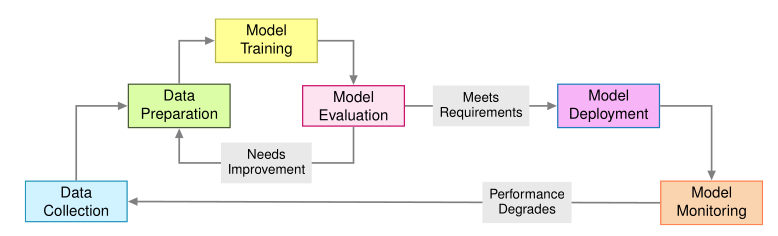
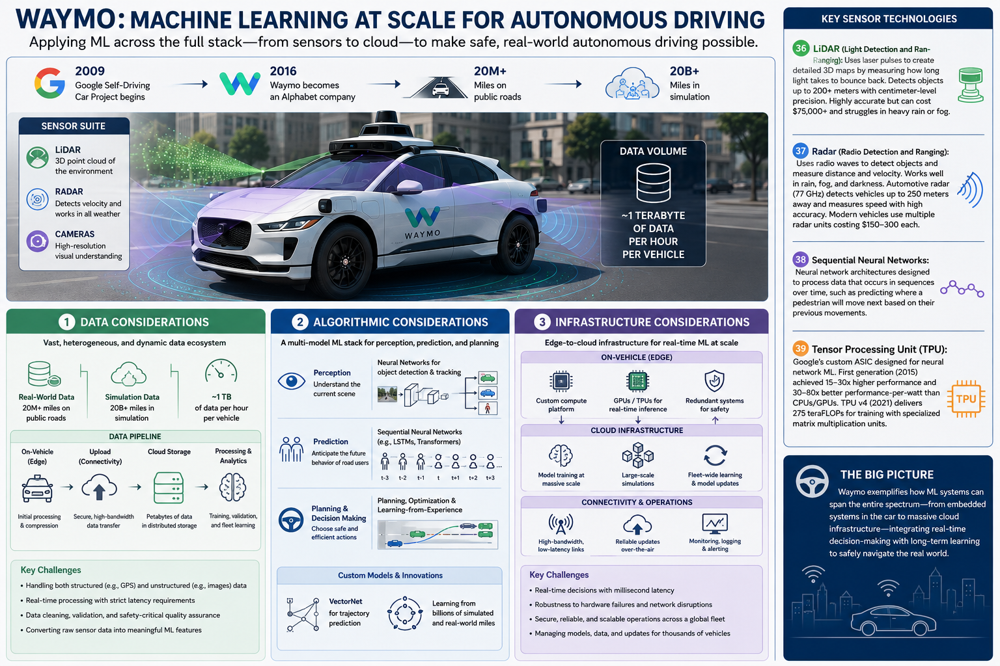

1:Machine Learning Lifecycle
Tradiditional Software Engineering
Design -> Implementation -> Testing -> Deployment
- Version control: track changes to code over time
- CI/CD pipelines: automate the build, test, and deployment process
- Test automation: run automated tests to catch bugs and regressions
- Static code analysis: analyze code for potential bugs and security vulnerabilities
Machine Learning lifecycle
data collection → training → evaluation → deployment → monitoring → retraining

Image credits: MLSys book
💬 Warm-up: what could have changed?
You trained a model in a notebook last month and got 94% accuracy. Today you re-ran the same notebook and got 89%. What are all the things that could have changed?
Answer
- The data itself, library versions, random seeds, preprocessing steps, hardware nondeterminism — not just the code
- In ML, reproducibility means pinning all of these, not just the source files
💬 Why can't you just git add your dataset and model weights?
Git works great for code. Why doesn't it work for data and models?
Answer
- Size (GBs–TBs), binary blobs don't diff meaningfully, lineage matters (which data + which config produced which model)
- Purpose-built tools exist for this: DVC, model registries, experiment trackers
💬 Loud vs silent failures
A software bug and a bad model both ship to production. How does each announce itself?
Answer
- Bug: crash, exception, 500 error — loud
- Bad model: keeps serving predictions, just worse ones — silent
- Silent failures are why production ML needs continuous monitoring, not just pre-deployment tests
- Data & model versioning — version data, models, and hyperparameters alongside code (DVC, model registries)
- Experiment tracking — log every run's config, metrics, and artifacts so results are reproducible and comparable (MLflow, W&B)
- Data validation — automated checks on schema, distributions, and quality before data reaches training (Great Expectations, TFDV)
- Automated evaluation — test models against benchmark suites and behavioral tests before promotion, not just accuracy on one held-out set
- CI/CD/CT pipelines — continuous integration and deployment extended with continuous training: retrain and revalidate automatically as new data arrives
- Feature stores — share consistent, versioned features between training and serving, avoiding training/serving skew
- Staged rollouts — shadow deployments, canary releases, and A/B tests before a model takes full traffic
- Monitoring & drift detection — track prediction quality, data drift, and concept drift in production; alert and trigger retraining
Case study: Waymo self-driving initiative

Image credits: ChatGPTData considerations
- Each Waymo vehicle generates approximately one terabyte per vehicle per hour of data in structured as well as unstructured format coming from LiDAR, Radar and other high resolution cameras.
Algorithmic considerations
- Specialized models for perception (object detection, lane detection, etc.)
- Prediction models like vectornet to anticipate the behavior of other users//vehicles
Infrastructure considerations
- Custom designed infrastructure on device for making real time predictions.
- Extensive use of cloud infrastructure for data collection, storage, processing, and efficient access during training.
💬 1 TB per vehicle per hour — what do you throw away?
You can't keep it all. What would you discard, and what's the risk?
Answer
- Most footage is routine highway driving; the rare events (near-misses, unusual pedestrians) are the valuable ones
- The risk: discard something rare today that you'll wish you had trained on tomorrow
- Techniques that address this: data curation, active learning, smart sampling
💬 Why both on-car AND cloud?
Why does Waymo run models on the vehicle and in the cloud? Why not all in one place?
Answer
- A braking decision can't wait for a network round trip (latency, connectivity)
- Training needs the fleet's collective data and massive compute (scale)
- This is the edge-vs-cloud trade-off: inference where the latency budget lives, training where the data and compute live
💬 A couch on the highway
The car sees something it has never seen before. What should the system do at that moment, and what should happen to that data afterwards?
Answer
- Now: graceful degradation, fallback behavior, safety envelope
- After: flag it, label it, feed it into retraining — closes the lifecycle loop
Core challenges
Data challenges
- Data quality: Data originates from human or machine sources, and may be noisy, incomplete, or biased.
- Data scale: The volume of data available for training can be enormous, requiring distributed computing and efficient data pipelines.
- Data drift: The gradual change in the statistical properties of input data over time, which can degrade model performance if not properly monitored and addressed through retraining or model updates.
Eg: For self driving cars:- Seasonal variations affect sensor performance through changing sun angles and precipitation patterns.
- Infrastructure modifications alter road layouts.
- Urban growth evolves traffic patterns.
- Each shift can degrade specific model components: pedestrian detection accuracy may decline in winter conditions, while lane following confidence may decrease on newly repaved roads.
- Detecting these shifts requires continuous monitoring of input distributions and model performance across operational contexts.
💬 Nobody changed the code
Your spam classifier was 95% accurate at launch. Six months later it's at 80% — and no one touched the code. What happened?
Answer
- Spammers adapted to the model — adversarial drift
- Drift isn't always natural (seasons, road changes); sometimes someone is actively working against your model
💬 Drift on your phone
Give an example of data drift from an app you use every day.
Answer
- Recommendations going stale after exam season, UPI fraud patterns shifting, festival shopping spikes, slang evolving faster than autocorrect
Model challenges
- Models require enormous computing power to train and run, making it difficult to deploy them in situations with
limited resources, like on mobile phones or IoT devices.
Transfer learning can help mitigate this challenge by leveraging pre-trained models and fine-tuning them on new data.
💬 Why doesn't your keyboard call GPT-4?
Why doesn't your phone keyboard's next-word prediction call a frontier-model API for every keystroke?
Answer
- Latency (must feel instant), cost (billions of keystrokes a day), offline operation, privacy (keystrokes never leave the device)
- Deployment constraints — not accuracy — decide which model runs where
Ethical challenges
- Fairness, as ML systems can sometimes learn to make decisions that discriminate against certain groups of people.
- Transparency and interpretability, as ML models can be opaque and difficult to understand, leading to trust issues and ethical concerns.
- Privacy, as ML models often require access to sensitive data, leading to concerns about data privacy and security.
💬 Can a model discriminate without seeing the column?
A loan-approval model never sees the "gender" column. Can it still discriminate by gender?
Answer
- Yes — proxy features: shopping patterns, pin codes, employment history correlate with protected attributes
- Removing the column removes the label, not the signal
💬 Accuracy vs explainability
Would you accept a hospital model that's 2% more accurate but completely unexplainable, over an interpretable one? Would your answer change for a movie recommender?
Answer
- Interpretability requirements are application-dependent, not absolute
- Stakes, recourse, and regulation decide the trade-off — not the ML engineer's taste
💬 Closing: where does the week actually go?
Of everything today — data, algorithms, infrastructure — which do you think a new ML engineer at Waymo actually spends their week on?
Answer
- Mostly data and infrastructure: pipelines, debugging data quality, monitoring — not designing new architectures
- Hence the saying: "ML systems are 10% machine learning and 90% engineering"
References
-
- Vijay Janapa Reddi, Machine Learning Systems — Chapter 1: Introduction
- Vectornet: Waymo